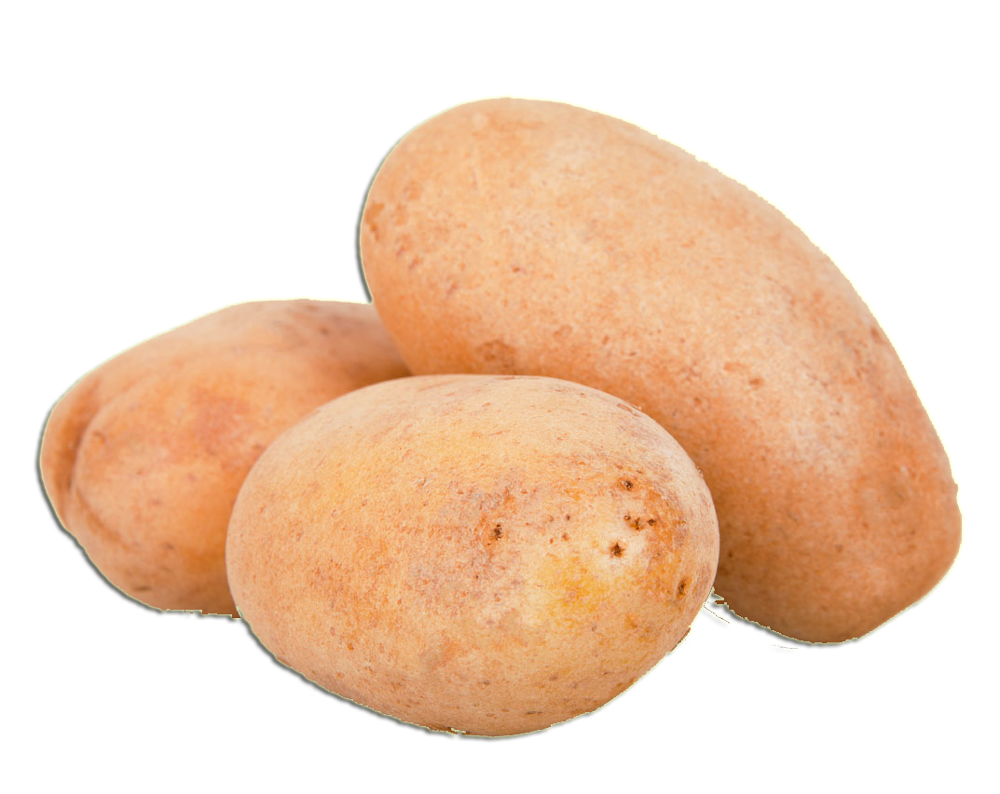
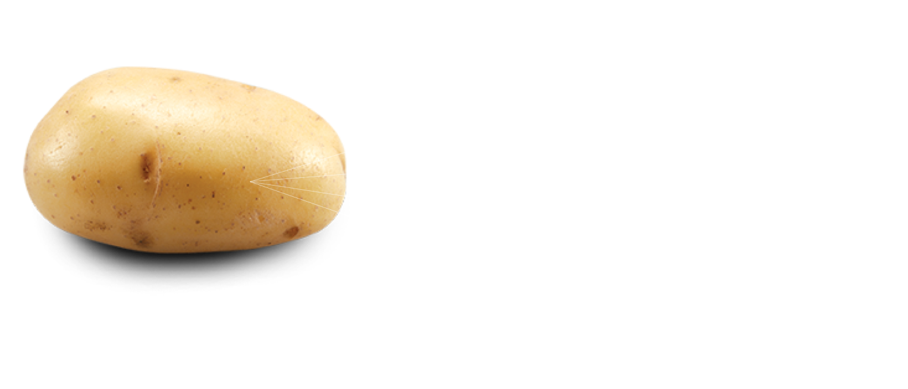

Delivery Service Available in Orem and Provo

Idaho potatoes are bigger and healthier.

Potatoes will be delivered to your door within 24 hours of being ordered
We currently deliver potatoes to all addresses with the Orem, UT and Provo, UT city limits. We are constantly looking at how to improve our service and reach, but we have no definitive plans for expanding the cities we serve.
Yes, these potatoes are grown in Idaho and are approved by the Idaho Potato Commission.
Idaho grown potatoes have a high solids content, so there's more potato and less water. The high quantity of starch grains cook to a light, fluffy texture and full, firm appearance when properly prepared.
The U.S. District Court for the Southern District recently affirmed only potatoes grown in Idaho can be called Idaho® potatoes. Idaho's ideal growing conditions - the rich, volcanic soil, climate and irrigation - are what differentiate Idaho® potatoes from russet potatoes grown in other states. 'Idaho® potato' and the 'Grown in Idaho®' seal are federally registered Certification Marks that belong to the Idaho Potato Commission (IPC). These Marks ensure that consumers are purchasing potatoes that have been grown in the state of Idaho.
Not yet...but it's in the works
In order to ensure maximum quality and freshness we do not ship potatoes via mail services
If your potatoes are rotten or unusable, we will offer a replacement free of charge
Just send us an email at support@potatopile.com and we'll make it right
In one word: convenience. When you need a lot of potatoes, it can get heavy pretty quickly. Besides that, we only bring you the unrivaled quality of genuine Idaho potatoes. Finally, we offer some of the best prices on the market.